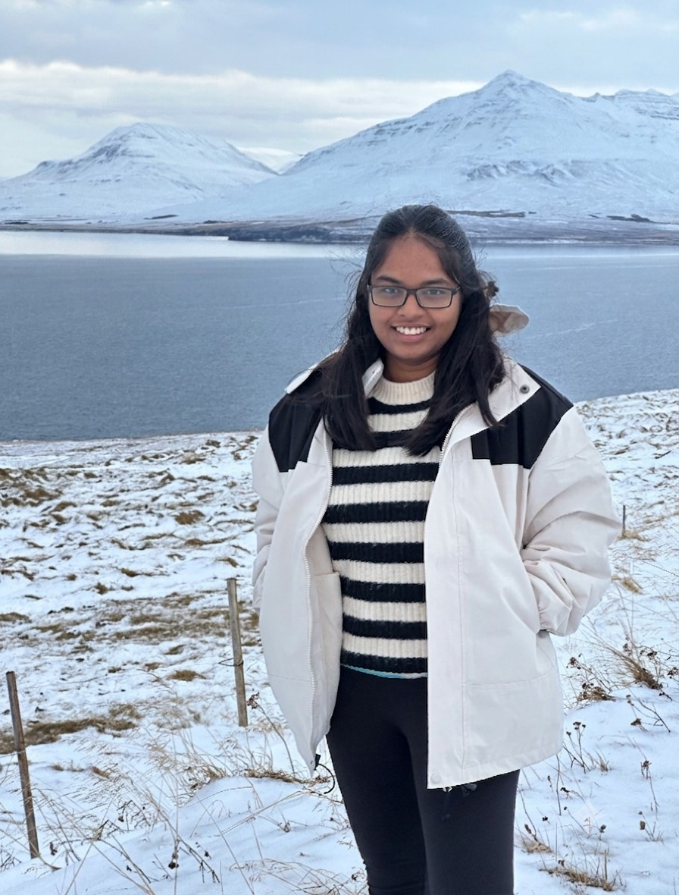

AI/ML Engineer
Kare4U Healthcare Solutions
Developed Generative AI and OCR pipelines for processing hospital billing documents and tariff structures.
I'm a physicist working across optics, quantum systems, and machine learning. My research background is in experimental photonics — correcting wavefront aberrations with spatial light modulators, isolating optical cavities from vibration, stabilizing lasers to a reference cavity — built during my master's in a strongly correlated quantum matter group.
I later spent a year working as an AI/ML engineer, which sharpened my computational side without pulling me away from physics. I'm now applying for PhD positions in groups where careful experimental optics and modern computational methods meet.

Developed Generative AI and OCR pipelines for processing hospital billing documents and tariff structures.
Characterization, calibration, and thermal crosstalk modeling of photonic integrated circuits.
Locked a laser to a reference cavity using the Pound–Drever–Hall technique, building a stable light source for a quantum matter experiment.
Designed a vibration isolation scheme protecting a high-finesse optical cavity from mechanical noise, a precondition for stable frequency locking.
Used a spatial light modulator to measure and correct wavefront aberrations in a beam path, improving beam quality at the experiment.
Characterized photonic integrated circuits as part of a short research project with a quantum optics group in Vienna.